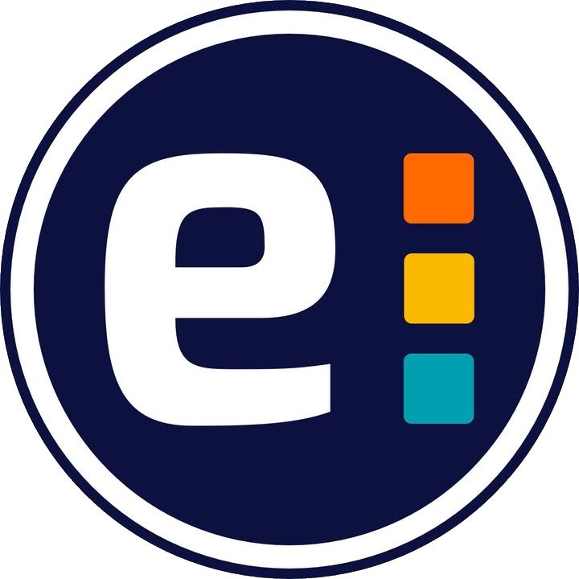

Moderní přístup. Reálná praxe. Tvoje budoucnost.
Programování, sítě a kyberbezpečnost.
Aktivní práce s nejnovějšími technologiemi.
Ekonomie, marketing a moderní management.
Skvělá příprava na vlastní byznys i vysokou školu.
Systém BYOD (Práce na vlastním notebooku).
Žádné sdílené a zastaralé počítačové učebny.
Vše tvoříte ve svém vlastním, známém prostředí.
Odborné předměty vyučují profesionálové přímo z firem.
Získáte aktuální a nezkreslené vědomosti z trhu.
Učíme moderně a vysoko nad rámec běžné střední školy.
Studenti IT oboru se úspěšně účastní prestižních soutěží.
Nedávno naši žáci zazářili na celostátním Hackathonu.
Motivujeme k inovativnímu myšlení na reálných projektech.
Osnovy rychle reagující na aktuální trendy doby.
Aktivně investujeme do nových komponent.
Nové sedačky a prémiové prostory pro relaxaci.
Osobní a individuální přístup k žákům.
Tady se všichni navzájem opravdu známe.
Otevřená a férová komunikace beze zdí.
Aktivní spolupráce mezi školou a rodiči.
Možnost zisku mezinárodních certifikátů.
Příprava na zkoušky běží v rámci běžné výuky.
Pravidelné exkurze
Polsko a Rakousko
Plánujeme Španělsko
Pravidelný lyžařský kurz
Máme na výběr až ze 4 jídel na oběd.
Vždy minimálně o 1 jídlo navíc oproti běžnému standardu jiných škol.
Obrovský výběr, každý den si u nás zaručeně vyberete podle chuti.
Přijďte na Den otevřených dveří
Podejte si přihlášku ještě dnes
Více na www.educanet.cz
Těšíme se na vás!